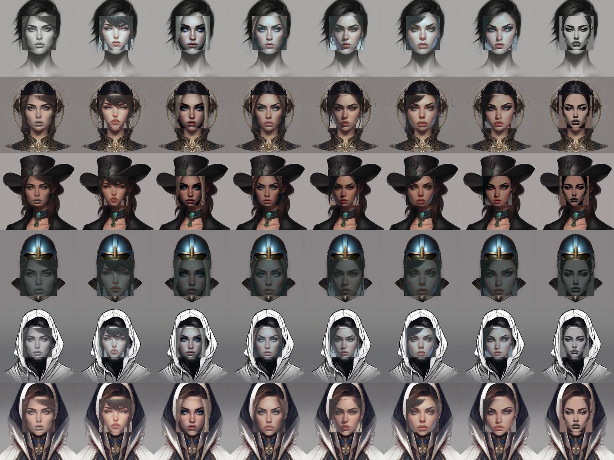

초점 = 각성단계 ÷ 25 · 흐림 6px→0 · 이목구비 25%→100% · 이중상 40%→0 (tools/focus_curve.py 와 같은 수)
태생 성급의 초점 그대로 — 카드를 누르면 위에서 각성시켜 볼 수 있다
무명 잔상의 얼굴은 이 48조합에서 나온다

행 = 두상(bare · circlet · hat · helmet · hood · kerchief) · 열 = 이목구비(clear · deep · devote · flee · guard · resist · seek · still) · 유니티 시트 4096×3072, 셰이더 Irem/Portrait 의 _Focus 로 같은 초점 규칙이 걸린다